Brie 2004
Brie, samedi, 09h30, il pleut, il vente... Je mets la combinaison de moto, les chaussures de pluie étanches (dans cet ordre, parce que le contraire ça coince, vaut mieux y penser avant...), l'anorak étanche, et je traîne tout le barda jusqu'au terrain. Personne, juste quelques gars, pas l'air très cerfs-volistes au fond. Bon, je monte toujours la tente... et puis, Dédé arrive : "C'est annulé" (Zut, venu pour rien ?) "Ils sont tous au gymnase" (Bon, je vais toujours aller voir !). Je démonte donc la tente, je retourne au camion, j'enlève les chaussures de pluie, la combinaison de moto (dans cet ordre, parce que c'est encore pire à retirer), je restocke le matos, j'installe le chien (de l'eau, les vitres entrebâillées etc.), et je prends juste mon Harfang Indoor, et mon petit oiseau en bambou à tout hasard.

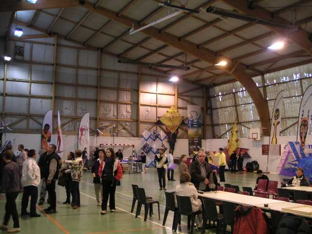
Hé ben, au gymnase, tout le monde est là ! Et pas pour rien, on y a passé la journée ! Claude a fini par faire des affiches disant que le festival de plein air était dans le gymnase. Les spectateurs ont du croire à une blague parce qu'on n'en a pas vu beaucoup !

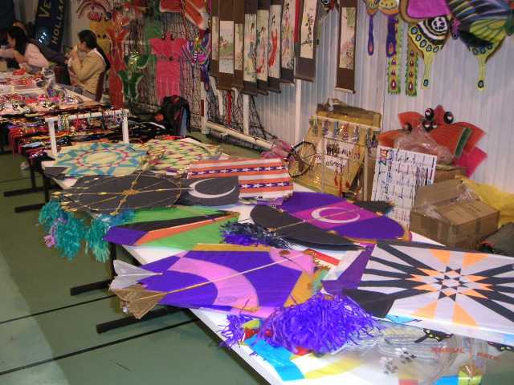
Pourtant, il y avait des choses intéressantes : des boutiques comme celles du Bilboquet, ou Vire-vole qui bradait son fond de boutique, des coréens, des chinois, des allemands, même des français, c'est pour dire !

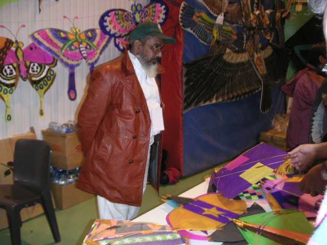
Abdul officiait gravement, mais toujours souriant dans sa barbe (surtout quand il ne comprend pas ce que vous lui dites et c'est fréquent)...

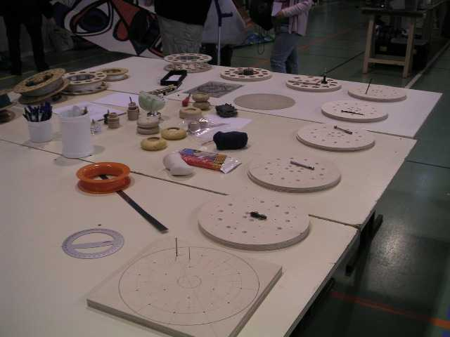
L'allemand, lui, présentait tous les stades de fabrication d'une bobine de haut niveau, assez mince, mais quand même avec roulement à billes et poignée orthopédique.

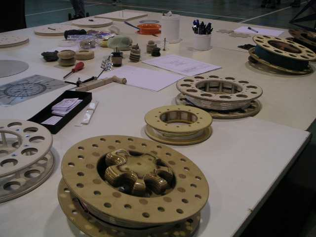
Il y avait même les outils nécessaires (mèches à bois, alésoirs, etc.) et en prime des poignées moulées à la main de l'utilisateur dans différentes résines (au centre de la table), toujours assez chères à réaliser. Mais lui préfère les tailler dans le bois et les vernir, c'est plus "collector".

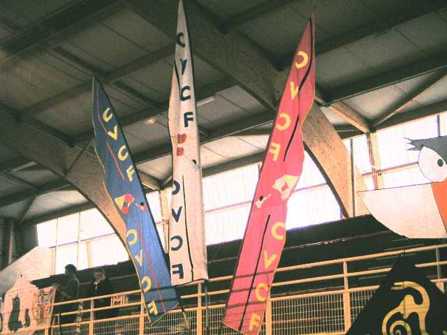
Dehors, le CVCF a sacrifié 2 bannières (qui ont bien souffert dans la tourmente) pour signaler l'endroit aux spectateurs qui cherchaient où diable était le festival. Autour de la salle, une déco s'est mise en place. le CVCF avait encore monté son "embrasement".

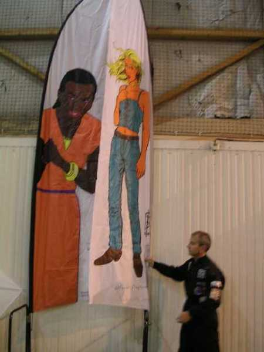
Olivier Raymond était venu de Suisse pour montrer ses bannières décorées de BD. Il les fait maintenant biface, je vous dit pas le boulot ! Il a même fait le tour de la salle au pas de course pour mettre aussi en valeur ses Fagas décorés de même.

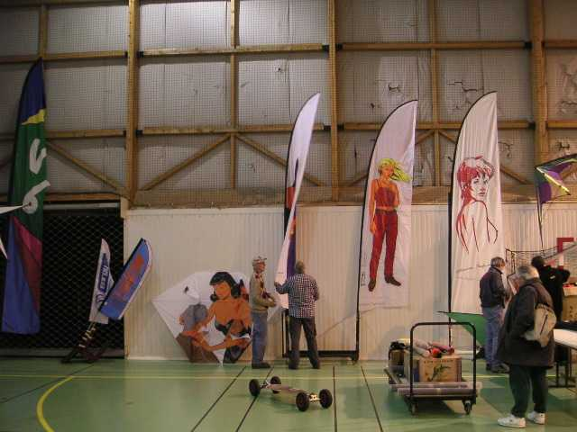

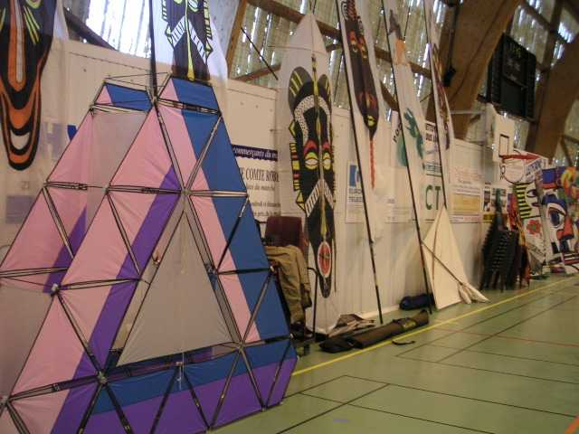
Les "Impossible" avaient amené un de leurs triangles, qui pose devant les bannières de Jean-Mi ! Au fond de la photo de beaux "visages" très stylisés nous surveillaient.

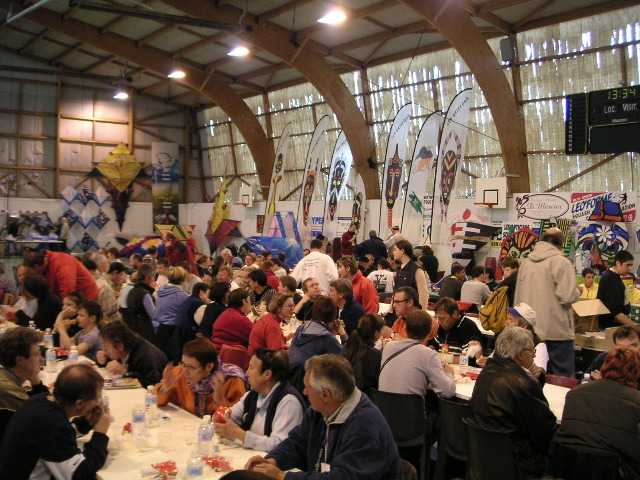
A midi, repas à l'abri, pendant que dehors des optimistes incorrigibles avaient sorti leur table (mais mangeaient dans la voiture quand même : fous mais pas idiots, faut pas exagérer).

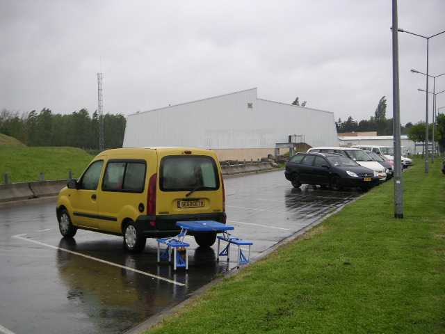

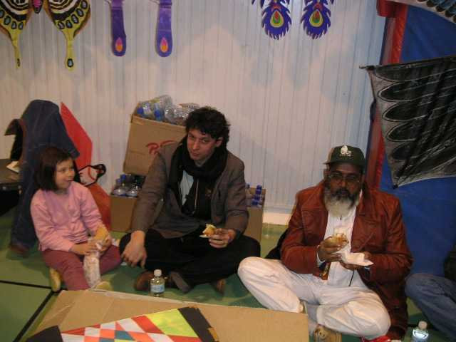
Ludo et Abdul, eux, préfèrent manger à l'indienne en surveillant leurs trésors.

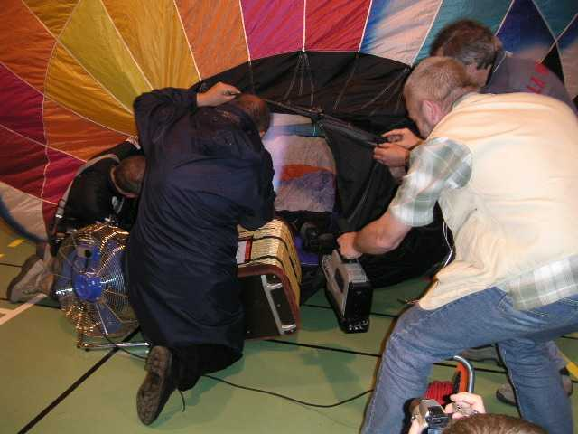
L'après-midi, attractions diverses : Michel Gressier a fait monter sa montgolfière.

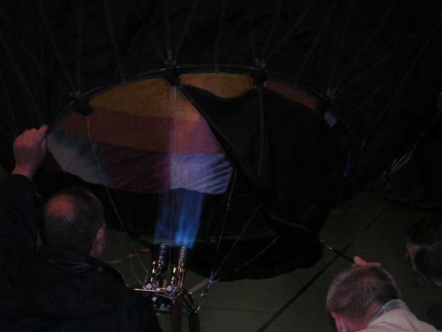
Elle s'est dressée lentement

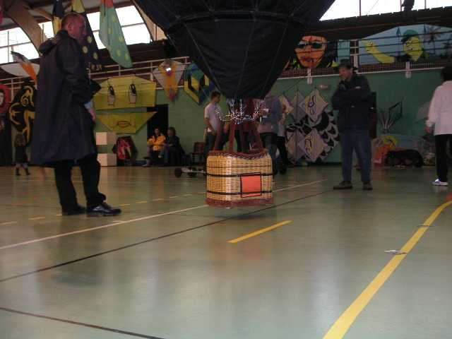
et a fini par décoller

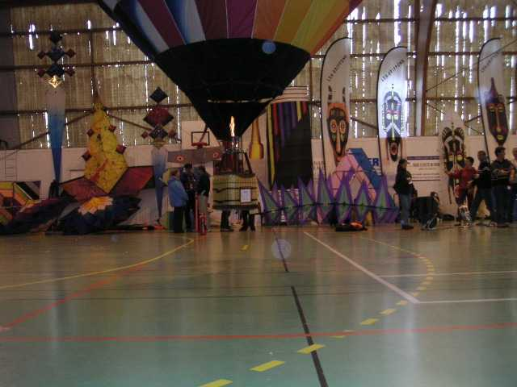
(Au fond, main gauche, divers cerfs-volants de l'aeronaute...)
Puis par atteindre des altitudes...

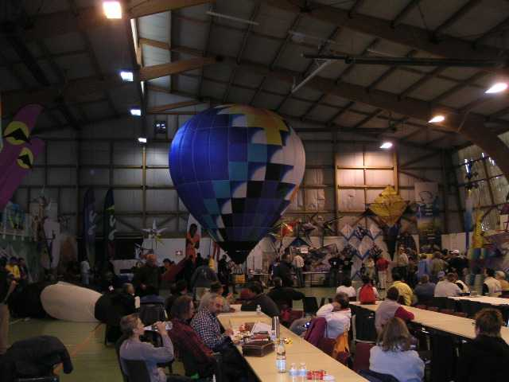
Au fond main droite, toute l'expo de Michel Gressier
seulement limitées par la hauteur du plafond, et non par la portée de la télécommande...

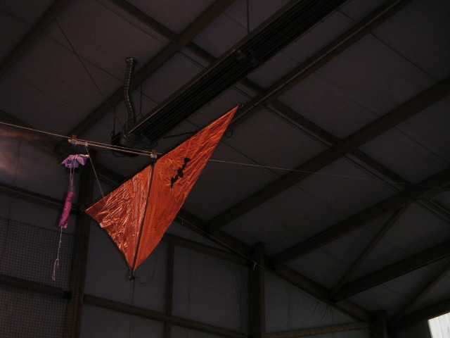
Nous avons également eu des lâchers de nounours par navettes (oui, en indoor, faut juste être un peu bricoleur !)

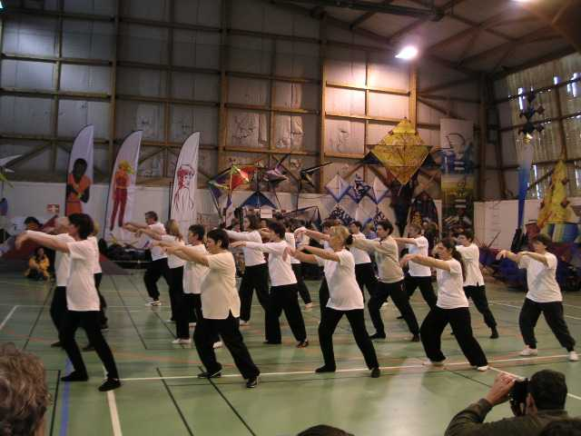
Aussi, pour calmer les nerveux impatients de se mettre en l'air, une démonstration de Taïchi, gymnastique lente et chinoise, sport de combat au ralenti.

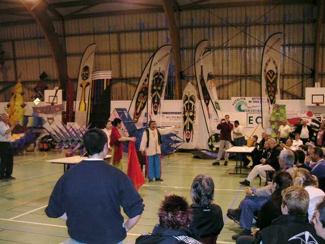
Enfin, couronnement de la soirée par un spectacle de magie, présenté par un clown que vous reconnaîtrez sûrement.

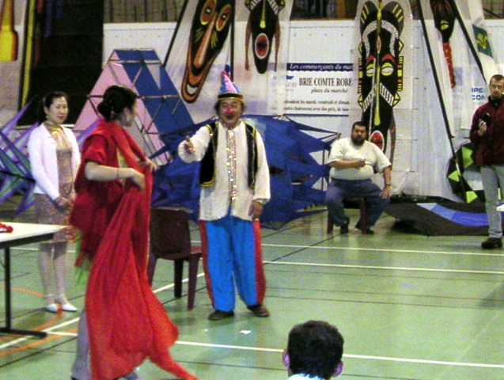
Sinon, je vous donne un indice plus loin.

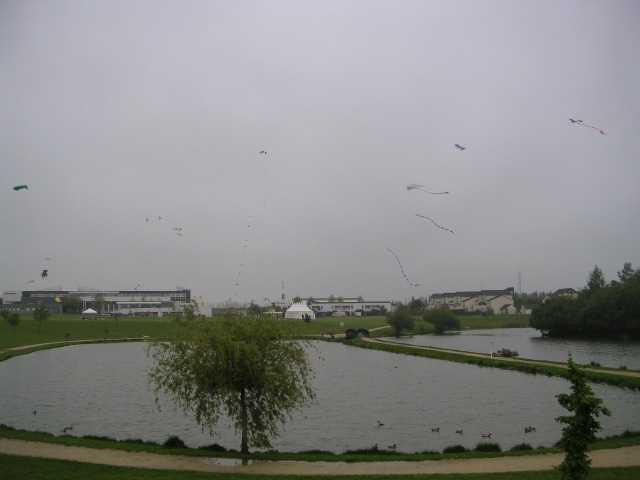
Enfin, on va se coucher. Dimanche matin, le temps est... pas terrible, mais enfin, on peut voler. La journée se passera bien, pratiquement sans pluie, avec un bon petit vent Force 3 de derrière le collège, donc assez turbulent. A 8h30, Fabrice faisait du révo, et le Météo de Bernard était tout là-haut invisible dans les nuages...

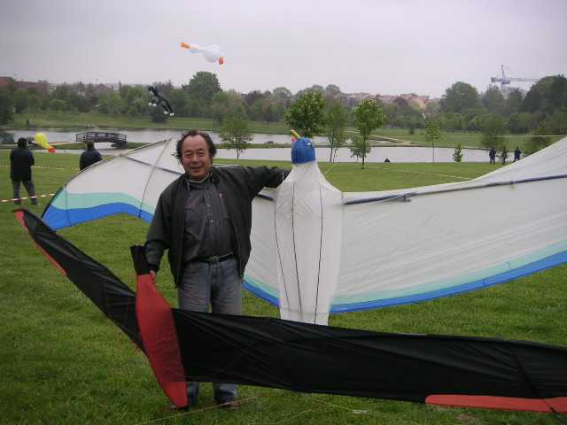
Dans cet univers champêtre, Wang Zhushan se prenait d'amour pour les petits oiseaux. Il sera là toute la semaine chez Ludo à Marines, pas loin de Paris, faites-y un petit tour pour vous initier à la construction d'autres oiseaux, ceux-là en bambou. Wang, c'est un grand maître dans ce domaine artisanalo-artistique.

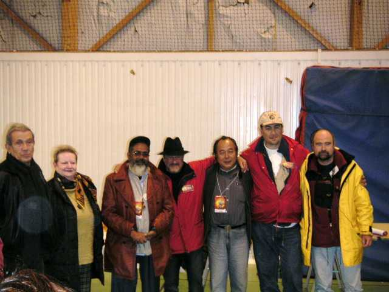
Pour finir le week-end, le petit pot (j'ai pas mis de photos de tous les pots, mon site est limité à 100 Mo) de la municipalité où ils nous remercient, nous les remercions, et à l'année prochaine. Claude est soulagé, heureux et fier. En fait, malgré la journée de mauvais temps, la plupart des cervolistes ont bien apprécié le rattrapage au gymnase. Ceux qui avaient des CV indoor ont pu les sortir et offrir du spectacle, les autres se sont rencontrés de façon beaucoup plus profonde que le bonjour-bonsoir ou bisou-bisou habituels.

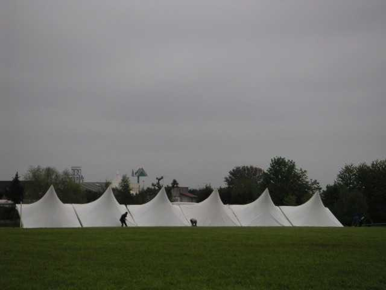
Après le pot, il faisait encore volable, le vent était plus doux, le ciel était libre, en attendant que les embouteillages se diluent. Dans un coin, une énorme et étrange structure, arche échouée ou très beau jardin du vent moderniste, m'a tenu compagnie encore un moment...